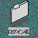
たぶん、結構いろいろファイルをつくったと思います。 ここで一度整理してみましょう。 デスクトップ上の右のようなアイコン（ディレクトリ・フォルダ）を ダブルクリックしてください。 下のようなウィンドウが開くと思います。 このウィンドウをディレクトリウィンドウと呼ぶことにします。
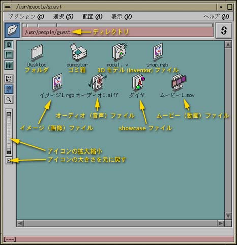
このウィンドウの各部分の説明は、 その場所にマウスを移動すれば、 ウィンドウの下のところに表示されます。
このウィンドウのメニューバーの下には、 現在開いているウィンドウの中に見えるファイルが置かれている場所 （ディレクトリ）を示しています。 このディレクトリより下位のディレクトリは、 このウィンドウ内でフォルダとして表されています。
| 不要なウィンドウは終了してください |
|---|
| このウィンドウは一つ一つが独立した プログラム（プロセス）なので、 あまりウィンドウをたくさん開くとコンピュータの処理能力を浪費します。 もちろん“最小化”しても状況は変わらないので、 不要なウィンドウは閉じて（終了して）ください。 |
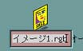
ファイル名を変更するには、 アイコンのファイル名の部分をクリックしてください。 右図のように、ファイル名の書き換えが可能になります。 なお、ファイル名には "."（ピリオド）や ","（コンマ）を除く記号文字は 使わないでください。また、ファイル名の先頭が "." だと、 あとでウィンドウに表示されなくなります （メニューバーの“表示”の“隠しファイル”を選択すれば見えるようになります）。 詳しくは教科書の36ページを参照してください。 また日本語も使わない方が身のためでしょう。
ディレクトリを作る
そのウィンドウの中に下位のディレクトリを作成するには、
メニューバーの“アクション”から”新しいディレクトリ”を選んでください。
empty.dir というアイコンができますから、
その名前を適当な名前に変更してください。
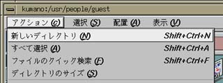
Toolchest の“選択”から“新しいディレクトリ”を選ぶと、 デスクトップ上にディレクトリを作ることができます。
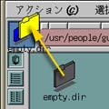
ディレクトリを開くには、 ディレクトリ（フォルダ）のアイコンをダブルクリックしてください。 新しいウインドウを開くのが嫌なら（時間もかかるし、重たくなるし、 画面も狭くなるし）、 そのアイコンをウィンドウの左上の“ドロップポケット”の上にドラッグして、 マウスのボタンを離してください（この操作を “ドラッグ＆ドロップ”と言います）。
| "Desktop" というディレクトリについて |
|---|
| ディレクトリウィンドウの中の "Desktop" というディレクトリは、 画面のデスクトップ（つまり背景の部分）に置いたものを格納しています。 このディレクトリにファイルをドラッグ＆ドロップすると、 デスクトップ上にアイコンが現れます。 |
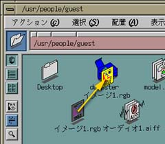
ファイルを別のディレクトリやウィンドウに移動するには、 そのアイコンをそこにドラッグ＆ドロップします。 "dumpster"（ゴミ箱）にドラッグ＆ドロップすれば、 そのファイルを削除することができます。dumpster をダブルクリックすると、 ゴミ箱のウィンドウが開きます。 間違えて捨ててしまったときは、 このウィンドウを開いてゴミ箱を漁ってください。
このように dumpster に捨ててもファイルは残っているので、
完全に消してしまいたいときは Toolchest の“デスクトップ”から、
“ゴミ箱を空にする”を選んでください。
| core ファイルは削除してください |
|---|
|
右のアイコン "core" は、
アプリケーションプログラムが異常終了したときに作成されたファイルです。
不要な（割にサイズが大きい）ので、見つけたら削除してください。
もちろん“ゴミ箱を空にする”も実行してください。
|
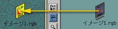
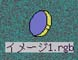
したがって、リファレンスの元のファイルを移動したり削除したりすると、 リファレンスが元のファイルを見つけられなくなり、 アイコンが『穴』になってしまいます（上図右）。 そういうリファレンスは削除してください。
デスクトップ上のアイコンを選択すると、 Toolchest の“選択”メニューのいくつかの項目が、 そのファイルに適用できるようになります。 また、ディレクトリウィンドウ内のアイコンを選択すると、 そのウィンドウのメニューバーの“選択”メニューの中のいくつかの項目が、 そのファイルに適用できるようになります。 マウスの右ボタンをクリックしても、 同じようなメニューが現れます。
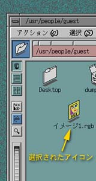
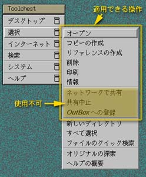
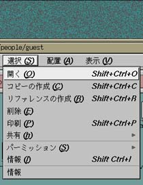
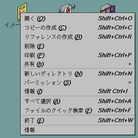
それでは、Toolchest の“デスクトップ”から、 “UNIX シェル”を起動してください。
この状態で、 シェルと呼ばれるインタプリタ（プログラミング言語の一種）が動いていて、 利用者から“コマンド”が与えられるのを待っています。 現在使用しているシェルは csh（Ｃシェル）というものです。 “（ホスト名）%”という表示は、 csh がコマンド待ち状態であることを示す プロンプト（入力促進符号）で、 みなさんのコンピュータではホスト名（コンピュータの名前）と、 コマンドの番号もここに表示されていると思います。 以降ではこの "%" だけをシェルのプロンプトして用います。
| コマンドの実行 | |
|---|---|
| キーボードから date とタイプし、 改行する（[Enter]をタイプする）。 コマンドは改行することによって 実行を開始する。 |
% date[Enter] ↓実行結果（出力） 1998年 5月17日(日曜日) 03時38分38秒 JST % ←次のコマンド待ち状態 |
| コマンドのオプション | |
|---|---|
| コマンドにはオプションを付けて実行することで、 その動作を返ることができるものがある。 date の "-u" はグリニッジ標準時で出力するオプション。 コマンドとオプションの間は空白をあける （続けると "data-u"という別のコマンドだと解釈されてしまう）。 |
% date -u[Enter] 1998年 5月16日(土曜日) 18時38分40秒 GMT % |
| コマンドの引数 | |
|---|---|
| cal コマンドを引数なしで実行すると今月のカレンダーを表示する。 |
% cal[Enter]
1998 年 5 月
日 月 火 水 木 金 土
1 2
3 4 5 6 7 8 9
10 11 12 13 14 15 16
17 18 19 20 21 22 23
24 25 26 27 28 29 30
31
%
|
|
コマンドには引数（ひきすう）を付けることができるものがある。
引数はコマンドの実行に必要な情報を与えるときなどに使う。
cal コマンドの引数に月と年を与えて実行する。
|
% cal 7 1961[Enter]
1961 年 7 月
日 月 火 水 木 金 土
1
2 3 4 5 6 7 8
9 10 11 12 13 14 15
16 17 18 19 20 21 22
23 24 25 26 27 28 29
30 31
%
|
| コマンドへのデータ入力 | |
|---|---|
|
コマンドの中には実行開始後に
キーボードからのデータ入力を必要とするものがある。 コマンドは入力されたデータを加工し、結果を出力する。 結果は通常画面に表示される。 コマンドへのデータ入力を終了するには、 Ctrl-D をタイプ（[Ctrl] キーを押しながら D をタイプ）する。 これは入力データの終りを意味する。 bc コマンドは入力データとして与えられた数式を計算して、 結果を出力する“電卓”コマンドである。 |
% bc[Enter] 2+3 ←データ入力（プロンプトは出ない） 5 ←出力 Ctrl-D ←入力終了 % ←プロンプトが出てくる |
| コマンド出力の保存 | |
|---|---|
| date コマンドを実行し、 出力を a というファイルに保存する。 |
% date > a[Enter] （何も出力されない） |
| cal コマンドを実行し、 出力を b というファイルに保存する。 |
% cal > b[Enter] （何も出力されない） |
|
ls コマンドを実行する。
a と b という２つのファイルができている。
ls は現在所有しているファイルの名前をリストアップする。 |
% ls[Enter] ～ a ～ b ～ |
| a というファイルの内容を出力。 |
% cat a[Enter] 1998年 5月19日(火曜日) 13時56分59秒 JST |
|
b というファイルの内容を出力。 cat は引数に指定したファイルの内容を出力するコマンド。 |
% cat b[Enter]
1998 年 5 月
日 月 火 水 木 金 土
1 2
3 4 5 6 7 8 9
10 11 12 13 14 15 16
17 18 19 20 21 22 23
24 25 26 27 28 29 30
31
|
| ファイル a の内容を画面に出力する代りに、 ファイル b に入れる。 |
% cat a > b[Enter] |
| それまでのファイル b の内容（カレンダ）は失われ、 代りに a と同じ内容が入っている （ファイルのコピー）。 |
% cat a[Enter] 1998年 5月19日(火曜日) 13時56分59秒 JST% cat b[Enter] 1998年 5月19日(火曜日) 13時56分59秒 JST |
| ">" の代りに ">>" を使う。 |
% date >> b[Enter] |
| それまでの内容の後ろに新しい内容が追加されている。 |
% cat b[Enter] 1998年 5月19日(火曜日) 13時56分59秒 JST 1998年 5月19日(火曜日) 14時24分24秒 JST |
">" という記号の役割
コマンドの出力を、 画面に表示する代りにファイルに保存します。 この操作を「標準出力のリダイレクト」といいます。
| ファイルからの入力 | |
|---|---|
| cat コマンドを引数なしで実行すると、 bc 同様キーボードからのデータ入力を待つ。 適当な文字をタイプすれば、 改行する度にそれがおうむ返しに画面に出力される。 |
% cat[Enter] saitou[Enter] saitou suzuki[Enter] suzuki tanaka[Enter] tanaka Ctrl-D |
| 同様に cat を引数なしで実行し、 その出力を c というファイルに保存する。 |
% cat > c[Enter] 2+3[Enter] 4*5+7[Enter] (3+4)*29[Enter] Ctrl-D |
| ファイル c の内容を cat コマンドの入力データに使う。 ファイル c の内容がそのまま表示される。 "<" の向きに注意。 |
% cat < c[Enter] 2+3 4*5+7 (3+4)*29 |
| ファイル c の内容を bc コマンドの入力データに使う。 ファイル c の内容の計算結果が出力される。 |
% bc < c[Enter] 5 27 203 |
"<" という記号の役割
コマンドへのデータ入力を、 キーボードをタイプする代りにファイルから行います。 この操作を「標準入力のリダイレクト」といいます。
| このようにしても同じ結果が得られる。 この場合は cat コマンドの出力をそのまま bc コマンドの入力に流し込んでいる。 これを「パイプ」と言う。 |
% cat c | bc[Enter] 5 ↑２つ↑のコマンドが同時に動く 27 203 |
| cp ～ファイルのコピー | |
|---|---|
| a というファイルのコピーを b という別のファイル名で作る。 すでに b が存在した場合、その内容は失われる。 |
% date > a[Enter] % cp a b[Enter] % cat a[Enter] 1998年 5月19日(火曜日) 19時26分38秒 JST % cat b[Enter] 1998年 5月19日(火曜日) 19時26分38秒 JST ↑b は a と同じ内容 |
| mv ～ファイルの移動（名前の変更） | |
|---|---|
|
a、b という２つのファイルがあるとする（上で作ったのであるはず）。 a を x に移動する。 b を x に移動する。
|
% ls[Enter] ～ a ～ b ～ % mv a x[Enter] % ls[Enter] ～ b ～ x ～ ←a が無くなり x ができる % mv b x[Enter] % ls[Enter] ～ x ～ ←b が無くなる |
| rm ～ファイルの削除 | |
|---|---|
|
ファイル x を削除する。 複数のファイルを指定しても良い。
|
% rm x[Enter] % rm a b[Enter] |
組み合わせ例
- *
- 任意の文字列にマッチする
- ?
- 任意の１文字にマッチする
- [ ]
- [ ] 内のいずれか１文字にマッチする
使用例
- a*
- a から始まるファイル名
- a*c
- 先頭が a で末尾が c のファイル名
- ???
- ３文字のファイル名
- d[135]
- d1、d3、d5 の３つのファイル
- [a-z]*
- 先頭が小文字のファイル名
- [^0-9]*
- 先頭が数字ではないファイル名
| a で始まるファイルの詳細を表示する。 ls コマンドの -l オプションは詳細表示。 |
% ls -l a*[Enter] |
| 末尾が ".doc" のファイルを連結して表示する。 |
% cat *.doc[Enter] |
| d1.bak、d2.bak、d3.bak の３つのファイルを削除する。 |
% rm d[1-3].bak[Enter] |
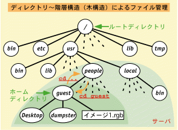
コンピュータのファイルを保存するためのメカニズムのことを、 ファイルシステムと呼びます。 このコンピュータのファイルシステムには、 非常にたくさんのファイルが保存されています。 仮に、それらが『同じ場所』にあったとすると、 目的のファイルを見つけるのがかなり大変になります。 他人と同じファイル名を付けないようにも気をつけなければならず、 とっても面倒なことになります。そこで、これらのファイルを用途や所有者ごとに分類・整理して保存するために、 UNIX のファイルシステムは図のような木構造になっています。
一番根本（最上位）の "/" は ルートディレクトリと呼び、 ファイルシステムの起点になります。 その下に bin、etc、usr などの サブディレクトリがあり、 usr の下にもさらに bin、people、local などのサブディレクトリがあります。
ディレクトリウィンドウの上部に表されている、 "/usr/people/ログイン名" （図のログイン名は guest）というのは、 "/" のサブディレクトリの "usr" のサブディレクトリの "people" のサブディレクトリの“ログイン名”という場所を示しています。 サブディレクトリの区切りにも "/" を使います。
このディレクトリは、 そのコンピュータにログインした利用者が所有するディレクトリで、 ホームディレクトリと呼びます。
利用者のファイルは原則としてこのホームディレクトリ以下に置かれます。 そのほかのほとんどのディレクトリは、他人のホームディレクトリを含めて、 利用者が勝手にファイルを作成したりすることはできないようになっています。 例外的に /tmp などは誰でもファイルを置くことができますが、 このディレクトリに置いたファイルは、 コンピュータの電源を切ると無くなってしまいます。
なお、このコンピュータの /usr/people 以下と /usr/local 以下は、 実際にはサーバと呼ばれる別のコンピュータにあり、 コンピュータネットワークを使って共有しています。
詳しくは、教科書の37ページを
参照してください。なお、教科書の図はディレクトリやファイルを表す
○と□の関係が上の図と逆になっています。
| cd ～カレントディレクトリの移動 | |
|---|---|
|
シェルでファイルに関する操作を行うとき、
操作対象のファイルを指定するときに基準となるディレクトリを
カレントディレクトリあるいは
作業ディレクトリと呼ぶ
（つまり、自分が今いる場所）。
pwd はその場所の“パス名”を表示する。
“UNIXシェル”を開いた直後のディレクトリはホームディレクトリです。 "guest" はあなたのログイン名にしてください。 |
% pwd[Enter] /usr/people/guest ←カレントディレクトリ % cd ..[Enter] ←一つ上に上がる % pwd[Enter] /usr/people % cd guest[Enter] ←一つ下に降りる % pwd[Enter] /usr/people/guest % cd /[Enter] ←ルートディレクトリ % ls[Enter] bin etc ～ tmp unix % cd tmp[Enter] ←相対パス % pwd[Enter] /tmp % cd /usr/bin[Enter] ←絶対パス % pwd[Enter] /usr/bin % cd[Enter] ←引数なし % pwd[Enter] /usr/people/guest ←ホームディレクトリ |
| mkdir ～ディレクトリの作成 | |
|---|---|
|
touch コマンドはすでにあるファイルの修正日時だけを、
コマンド実行時の時間に設定する。
ファイルがなければ空のファイルを作る。 mkdir で d というディレクトリを作る。 ls コマンドに -F オプションを付けると、 ファイルの種類が分かる（"/" が付いていればディレクトリ）。 |
% touch a b c[Enter]
% ls[Enter]
～ a ～ b ～ c ～
% mkdir d[Enter]
/usr/people
% ls[Enter]
～ a ～ b ～ c ～ d ～
% ls -F[Enter]
～ a ～ b ～ c ～ d/ ～
d はディレクトリ↑
|
|
ls の引数に普通のファイルを指定すると、そのファイルが（あれば）表示される。 ls の引数にディレクトリを指定すると、 そのディレクトリの中にあるファイルの一覧が表示される （d は作ったばかりなので、中身は空）。
|
% ls a[Enter] a % ls d[Enter] （何も表示されない） |
|
"." はカレントディレクトリを示す。 ".." は上位のディレクトリを示す （但し、"/"（ルートディレクトリ）の .. は "/"）。 |
% ls[Enter] ～ a ～ b ～ c ～ d ～ % cd d[Enter] % ls[Enter] （何も表示されない） % ls .[Enter] （何も表示されない） % ls ..[Enter] ～ a ～ b ～ c ～ d ～ ←上と同じ |
| ディレクトリへの cp/mv | |
|---|---|
| ファイル a をディレクトリ d にコピーする。 ディレクトリ d 内に a ができる。 |
% cd[Enter]←ホームディレクトリに戻る % cp a d[Enter] % ls d[Enter] a |
| ファイル b、c をディレクトリ d に移動する。 カレントディレクトリから b、c がなくなり、 ディレクトリ d 内に b、c ができる。 |
% mv b c d[Enter] % ls[Enter] ～ a ～ d ～ ←b、c が無い % ls d[Enter] ～ a ～ b ～ c ～ |
| もちろん、コピー／移動先でのファイル名も指定できる。 |
% cp a d/e[Enter] % ls d[Enter] ～ a ～ b ～ c ～ e ～ % cat d/a[Enter] % cat d/e[Enter] d/a と d/e の中身は同じはず↑ |
| rmdir ～ディレクトリの削除 | |
|---|---|
| ディレクトリ d を削除する。 d が空ではないので、削除できない。 |
% rmdir d[Enter] d: ディレクトリが空ではありません |
|
ディレクトリ d の中を空にしてから、
d を削除する。 a、e は削除する。 b、c は一つ上のディレクトリ（".."、 親ディレクトリ）に移動する。 |
% cd d[Enter] % rm a e[Enter] % mv b c ..[Enter] % ls[Enter] （何も表示されない） % cd ..[Enter] % rmdir d[Enter] （何も表示されない） % ls[Enter] ～ a ～ b ～ c ～ ←d が削除された |
| ディレクトリ単位のコピー／移動 | |
|---|---|
|
ディレクトリ d を作り、
そこにファイル a、b、c をコピーする。 ディレクトリ d 全体を e というディレクトリにコピーする。 この場合、cp コマンドに -r というオプションを付ける。 |
% mkdir d[Enter] % cp a b c d[Enter] % cp -r d e[Enter] % ls d e[Enter] d: a b c e: a b c ↑d と e に同じファイルが入っている |
|
ディレクトリ e を f に移動する。
これは単にディレクトリ名が変わっただけ。 f を d に移動する。 d というディレクトリが既にあるので、 f はその中に入る。 |
% ls -F[Enter] ～ a ～ b ～ c ～ d/ ～ e/ ～ % mv e f[Enter] % ls -F[Enter] ～ a ～ b ～ c ～ d/ ～ f/ ～ % mv e f[Enter] % ls -F[Enter] ～ a ～ b ～ c ～ d/ ～ ←f が無い % ls -F d[Enter] a b c f/ ←こっちに移動した |
"ファイル名.bak" は showcase のバックアップファイル（修正前のファイル）です。 また "ファイル名.sav" は showcase が異常終了したときに作成する、 “緊急避難”ファイルです。（２）cal コマンドを使って自分の誕生月のカレンダーを表示し、 自分の誕生日の曜日を確かめてみてください。 また "cal 1998" のように引数に月を指定しなかった場合は 何が表示されるか確かめてみてください。どちらも必要でなければ消してください。 もし、必要なら、".bak" や ".sav" を付けない、 別の名前に変更してください。